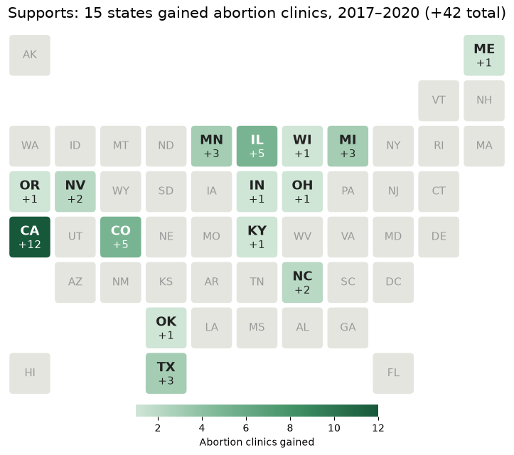
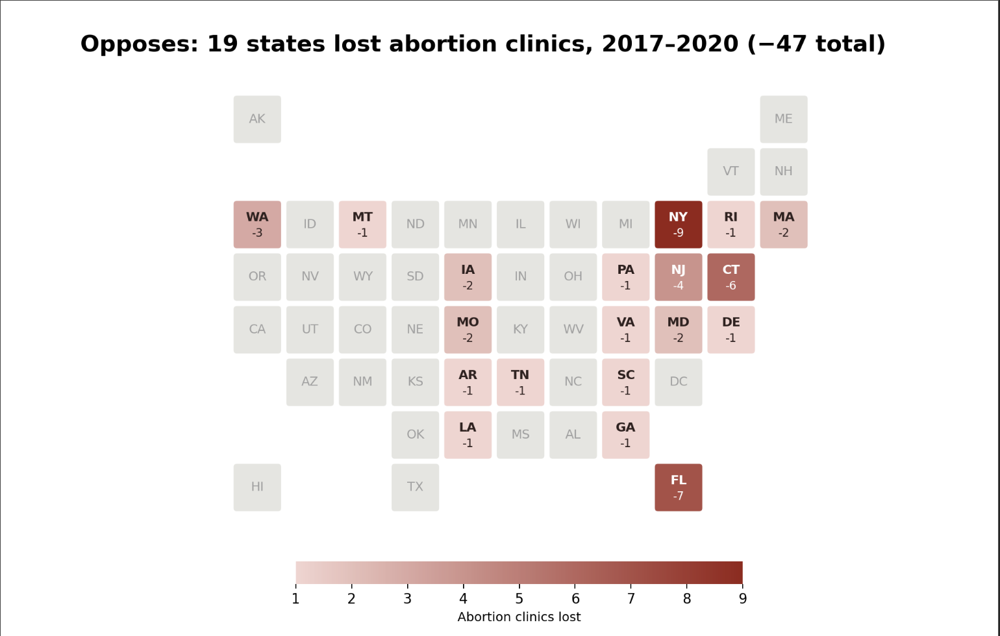

Proposition: Abortion clinic availability expanded in the United States between 2017 and 2020.
Measure: Change in the number of abortion clinics between 2017 and 2020.
Dataset: Guttmacher Institute Abortion Data by State (Excel)
FOR the Proposition

Design Decisions and Rationale:
- Highlight gains and gray out other states (−1.5): We highlight the 15 states that gained clinics, while states with losses or no change appear in gray. The national net decrease of five clinics is not shown in this map, directing attention toward growth. We considered a red-and-green map showing both gains and losses, but it would weaken the supporting message.
- Emphasize gains in the title (−1): The title directs readers toward the 15 states that gained clinics, and the green tiles reinforce that focus. It counts states rather than people and does not establish how many people benefited. A more balanced alternative would describe changes across all states, but we chose a title that emphasizes expansion.
- Use darker green for larger gains (−0.5): The gradient distinguishes the size of gains, with California’s increase of 12 clinics appearing darkest. Green also associates the changes with positive growth, although many states gained only one clinic. A neutral blue scale could communicate the same values with less positive framing.
- Label each gain directly (+2): Each highlighted tile displays its exact change, allowing readers to see that most gains are small without estimating from color alone. We considered relying only on the color legend, but direct labels make the numerical values easier to interpret.
AGAINST the Proposition

Design Decisions and Rationale:
- Use a state tile map (+1): The tile map shows where clinic losses happened while keeping every state in a familiar U.S. layout. Equal-sized tiles make smaller eastern states easier to see, although they do not represent state population or geographic size.
- Label every loss directly (+2): Each red tile includes the state abbreviation and exact clinic change, so readers do not have to estimate values using color alone. A bar chart would be easier to rank, but it would not display the regional pattern as clearly.
- Use darker red for larger losses (0): Darker shades make states with greater clinic losses stand out, while the color scale explains the values. Red also makes the decline feel more serious than a neutral color would.
- Show gains and no-change states in gray (−1.5): Gray directs attention toward clinic losses, but it combines states that gained clinics with states that experienced no change. A red-and-green map would represent both outcomes more equally but weaken the opposing argument.
- State the conclusion in the title (−0.5): The title emphasizes that losses occurred across 19 states instead of focusing on gains elsewhere. The statement is accurate, but it frames the visualization negatively before readers examine the full pattern.
Final Reflection
The main challenge in this project was using the same dataset to communicate opposing arguments about abortion clinic availability in the United States between 2017 and 2020. Our supporting visualization highlights the 15 states that gained a combined 42 clinics, while our opposing visualization emphasizes the 19 states that lost a combined 47 clinics. We used tile maps to show where these changes occurred. After receiving feedback that our original maps did not clearly communicate the size of each change, we added color gradients and legends. This allowed larger gains and losses to stand out while preserving the geographic patterns.
What really surprised us was how different the same dataset could appear through changes in emphasis alone. Green coloring and a title focused on gains create a positive impression, while red coloring and a title focused on losses suggest decline. Fading other states into gray strengthens each argument, even though it leaves out information that could change a reader’s interpretation. The national net decrease of five clinics also hides variation between states. Additionally, clinic counts alone cannot establish whether access improved: they do not account for travel distance, population, affordability, or the number of patients each clinic can serve.
Through this project, we came to understand ethical visualization as communicating accurate values while providing enough context for readers to evaluate the message. Highlighting a particular pattern can be a reasonable persuasive choice, but withholding information that would substantially change the conclusion can become misleading. Our color gradients and numerical labels make the magnitude of changes clearer, but the selective highlighting still directs attention toward only one side. In a public-facing analysis, we would disclose which states are highlighted and provide the national gains, losses, and net change. This would let readers assess our interpretation alongside the broader evidence.